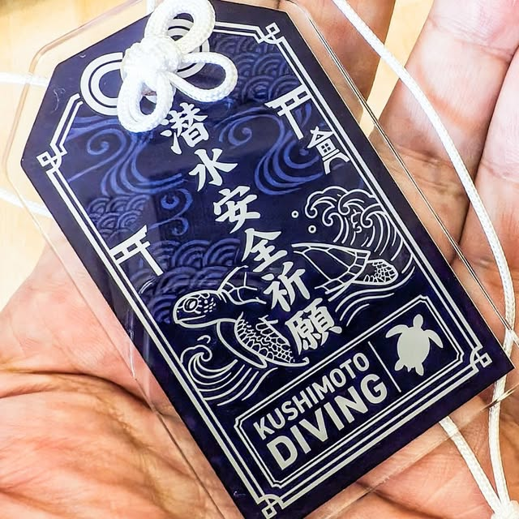

The road Orz passed by 2026 年 08 月
08 月 03 日 ( 月 )
Dive #189 年間本数自慢に始まり過重労働の問題について
threads に何気なく以下のポストをしました。
## orzbruford
まれに「年間1000本潜っています」という人がいる。
1000÷365≒2.74。本当に年間1000本なら、365日休みなく毎日2〜3本潜る計算になる。休日や海況不良を考えれば、実際には一日あたりの本数はさらに増える。
現地サービスの忙しいガイドの中には年間300〜500本程度という話は珍しくない。それと比べても1000本という数字は突出している。
ダイビングコンピュータは反復潜水を前提に設計されているけれども、年間 1000 本の反復潜水というような極端な運用は、減圧ストレスや疲労、脱水などの管理が極めて重要になる。
NDL を守っていても減圧症のリスクは無視できない。
だから「年間1000本」という数字だけを誇らしげに語る人を見ると、本当にその数字の重みを理解しているのか疑問に思う。数字だけで経験を語ろうとする人とは、あまり距離を縮めたいとはぼくは思わない。
仮に店に面接に来た人がそれを口にしたら、ぼくはどうやってすぐに帰っていただこう、とスイッチが切り替わる。こんなことを口にする人に大切なゲストをまかせるわけにはいかない。
以上なんか見た感想。
ポストの背景としては以下のようなことになります。
とあるダイビングサービスのページを見ていて、とあるスタッフが自分は年間 1000 本潜っている、と喧伝されていました。
それに対して、いや、それ、計算合わねぇよ、と思ったのと、そういった数字を喧伝するのって信頼性を損なうんじゃないの？と思ったのがポストのきっかけになります。
仮にそれが本当なら、それは「ブラックな環境で命を削って働いていました」という自己紹介になってしまいます。
なのでそんな自己紹介への違和感と、そんな人に大事なゲストをまかせられないよな、と率直に思ったことをポストしました。
それに対してなかなかブラックな職場環境の話のレスが……実はぼくはまだマシなんだけど身につまされることもあって……
以下チャット形式のやとりにします。
## rotarubin さん
常夏のロタ島で21年間で10,000本を超えました。最多は250日営業、750本くらいでした。今、長期出張で手元にありませんが全ての記録を保管しています。天候も考えても1,000/1年はかなり厳しいと思います。講習ばかりで6本/1日かも知れませんね。
## orzbruford
それはなかなか過酷でしたね。お疲れ様でした。
タフすぎなのと、ハード過ぎで、言葉を失います。お体は大丈夫でしたでしょうか。

## divercozyさん
若い頃働いてたお店では夏はボートで体験ダイビング1日で1ダイブ15-20分で10本とかざらにあったなー。顔あげたらもう器材背負ってまってるんですよね。水面休息はエアーなくなってきたあたりの3本目あとにタンク交換タイムで海の中からBC渡して交換してもらってる間の5分とか。年間300日はダイビングするしそういうぶん回し系のお店は今でもそのショートダイブを1本と数えるなら1000本とか余裕で行きます。なんならすごい人は1500〜2000本とかいくんじゃないかと。
朝3時間くらいで10人、昼休憩30分は移動中のみで、昼から3時間くらいで10人。
終了時のミーティングで明日の体験は12名だね！とか言われるとそれだけ？余裕や昼飯食べれる！って感覚になるから若さと無知って怖い。
これで給料10万とかでしたからね。
もしくはタンク本数で言ったら1日4-5本使う感じですね！その場では無知な18-19歳の頃は断れないんですよね。それが当たり前だと教育されてるから。
ボートショップはトラウマになるレベルですよ。
まぁ過酷な現場の話が出るわ出るわで、divercozyさんほどではないですけど、ぼくの繁忙期のときを思い出しました。
ぼくも 2 週間で体重を 8kg 落としてしまったことがあって (たいしたことねぇじゃんって言われそうですけど)、あのときはこのペースで働き続けると自分が死ぬんじゃないかと正直思った記憶があります。
あの頃はまだダイビングブームとその予熱があった頃で、繁忙期だと体験ダイビング、OW 講習、アドバンス講習、ファンダイブをオーナーを含めた少ないスタッフで回さざるを得なくて、divercozy さんとかなり近い状態で、食事を取る時間もない (アイスクリームを夕方に 1 本だけとか、水を飲む時間くらいはなんとか確保したけれど)、水面休息時間も足りない、トイレくらいしかプライベートな時間が存在しない、なんてこともありました。
とはいえ、当時ぼくは都市型ショップ務めだったので、現地サービスの過酷さより遥かにマシとは言えます。
ダイビングブームまっさかりのある沖縄のホテルで働いていた女性のインストラクターの方の話になります。
当時のホテル経営者だとか管理者の人たちってダイビングのことがなにもわからないので、当時ダイビングがブームだったこともあり、体験ダイビングをやたらと宿泊観光客にプッシュすることが常態化していたそうです。
そして大勢の体験ダイビングを楽しむお客さんがいたのですが、担当するインストラクターはその女性一人。
当然休憩も食事も取る暇もなく連日一人で大量の体験ダイビングをさばくことになり、しかも休みがない。
このままでは潰れてしまう、命の危険を感じる、ということでその仕事をやめることにした、ということを書かれていました。
そりゃぁ自分の命を守るためにやめるだろう、と思った記憶があります。
こういった過重労働の最大の欠点は、やはり疲労してしまうということです。それが続けば過労に進みもとに戻ることが困難になります。
たとえ一過性の疲労状態であっても、インストラクターも人間ですから当たり前に判断力は鈍りますし、ミスも起こしやすくなる。認知も狭窄しやすい。
疲労は害だけがあって、良い何かをまったく生み出しません。
そしてその良くないことはゲストにも波及します。
ぼくたちはゲストの安全を守らなければならないという社会要請に応えることができるように日々努力を重ねています。
ですけれど人として無理がある過剰に忙しすぎる働く環境はそれを阻害します。
忙しすぎることによる疲労、過労で観察力は鈍り、判断力も鈍り、ノーマルな状態だと届くはずのサポートが届けられない、なんてことも起きてしまいます。
最終的にはやはりインストラクターの過労状態はゲストに影響を及ぼします。
ゲストの安全性は低下します。良くないのは明らかです。
これまで雇用される側の視点で書いてきましたけれど、以上のことは実は雇用する側、オーナーにも当てはまります。
働いているインストラクターのなかで一番仕事をしているのは誰かということを観察すると、どう見てもオーナーが一番働いています。働きすぎだとも言えます。
他の雇用されているインストラクターと同様にそれがいいはずはありません。
やはりダイビングは「安全」を商品として提供する仕事でもあります。だから働く環境の改善は、従業員の福利厚生だけの問題ではなく、ゲストの安全を守るための安全管理そのものでもあるとぼくは思います。
問題提起で終わっていて、対策と現場実装についての考えを述べていませんが、整理できていないこと、ぼくの独力では良い解決方法を導き出せないことなどもあって、まずはゲストのために働く全てのダイバーの健康と安全を祈りながら、一旦筆を起きます。
もしもこの件について想うところがある場合、SNS でもかまいませんし、note+ やブログでも構いません。その想いを綴っていただけるのなら幸いです。きっとそれは現在現場で奮闘している仲間たち、将来の仲間たち、そして全てのダイバーにきっと役立つ何かだとぼくは信じています。
- Category :
- #Records of Orz's Road
- #ダイビング
- #スクーバダイビング
- #インストラクター
- #働くこと
- #過重労働について
- #安全に及ぼす影響
- #問題提起